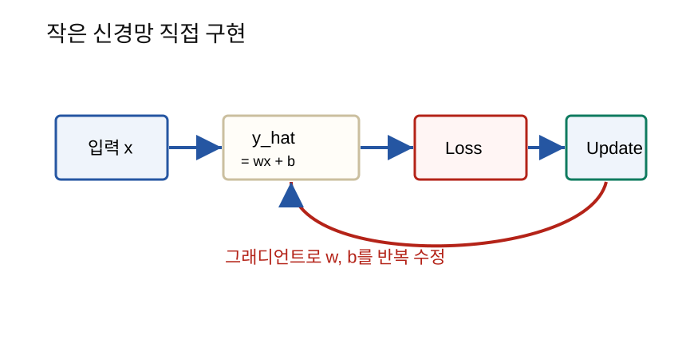

지금까지 배운 함수, 벡터, 행렬, 미분, 그래디언트, 손실함수를 연결해 작은 신경망 학습 과정을 직접 구현한다.
수학 개념을 따로 배우는 것만으로는 부족하다. AI 학습은 이 개념들이 한 루프 안에서 함께 움직인다.
예측 -> 손실 계산 -> 그래디언트 계산 -> 파라미터 업데이트이 과정을 작은 예제로 직접 구현하면 딥러닝 학습의 전체 구조가 보인다.

가장 단순한 선형 모델을 학습시킨다.
y_hat = wx + b데이터는 다음 규칙을 따른다고 하자.
y = 2x + 1학습 목표는 모델이 스스로 w = 2, b = 1에
가까운 값을 찾게 하는 것이다.
작은 데이터셋을 만든다.
| x | y |
|---|---|
| 1 | 3 |
| 2 | 5 |
| 3 | 7 |
| 4 | 9 |
이 데이터는 다음 규칙을 따른다.
y = 2x + 1모델은 다음과 같다.
y_hat = wx + b처음에는 w, b를 틀린 값으로 시작한다.
w = 0
b = 0처음 예측은 좋지 않다.
x = 2
y_hat = 0*2 + 0 = 0
실제 y = 5평균제곱오차 MSE를 사용한다.
loss = 평균((y_hat - y)^2)예측이 실제값과 가까울수록 loss는 작아진다.
데이터 하나에 대해 손실은 다음과 같다.
L = (y_hat - y)^2
y_hat = wx + b미분은 다음과 같다.
∂L/∂w = 2(y_hat - y)x
∂L/∂b = 2(y_hat - y)데이터가 여러 개이면 각 데이터의 그래디언트를 평균내면 된다.
xs = [1.0, 2.0, 3.0, 4.0]
ys = [3.0, 5.0, 7.0, 9.0]
w = 0.0
b = 0.0
lr = 0.01
for epoch in range(200):
total_loss = 0.0
grad_w = 0.0
grad_b = 0.0
for x, y in zip(xs, ys):
y_hat = w * x + b
error = y_hat - y
loss = error ** 2
total_loss += loss
grad_w += 2 * error * x
grad_b += 2 * error
n = len(xs)
total_loss /= n
grad_w /= n
grad_b /= n
w -= lr * grad_w
b -= lr * grad_b
if epoch % 20 == 0:
print(epoch, total_loss, w, b)
print("final:", w, b)학습이 잘 되면 w는 2에, b는 1에
가까워진다.
import torch
x = torch.tensor([[1.0], [2.0], [3.0], [4.0]])
y = torch.tensor([[3.0], [5.0], [7.0], [9.0]])
model = torch.nn.Linear(1, 1)
optimizer = torch.optim.SGD(model.parameters(), lr=0.01)
loss_fn = torch.nn.MSELoss()
for epoch in range(200):
y_hat = model(x)
loss = loss_fn(y_hat, y)
optimizer.zero_grad()
loss.backward()
optimizer.step()
if epoch % 20 == 0:
print(epoch, float(loss))
print(list(model.parameters()))이 코드는 직접 구현한 루프와 같은 일을 한다.
| 직접 구현 | PyTorch |
|---|---|
y_hat = w*x + b |
model(x) |
| 손실 직접 계산 | loss_fn(y_hat, y) |
| 미분 직접 계산 | loss.backward() |
| 직접 업데이트 | optimizer.step() |
지금까지 배운 내용은 모두 이 루프에 들어간다.
| 배운 개념 | 여기서 하는 역할 |
|---|---|
| 함수 | y_hat = wx + b |
| 벡터/행렬 | 여러 데이터를 한 번에 표현 |
| 미분 | 손실의 변화율 계산 |
| 그래디언트 | w, b를 바꿀 방향 |
| 경사하강법 | 파라미터 업데이트 |
| 통계 | 데이터 스케일과 평가 |
| 확률/손실 | 분류 모델로 확장할 때 필요 |
y_hat = wx + b에서 학습되는 값은 무엇인가?∂L/∂w는 무엇을 의미하는가?optimizer.zero_grad()는 왜 필요한가?작은 신경망 학습은 예측, 손실 계산, 그래디언트 계산, 업데이트의 반복이다. PyTorch는 이 과정을 자동화하지만, 내부에서는 지금까지 배운 수학이 그대로 작동한다. 이 작은 예제를 이해하면 더 큰 딥러닝 모델도 같은 원리의 확장으로 볼 수 있다.
다음 학습: CNN, Transformer, 생성 모델 수식을 실제 논문과 코드에서 읽기